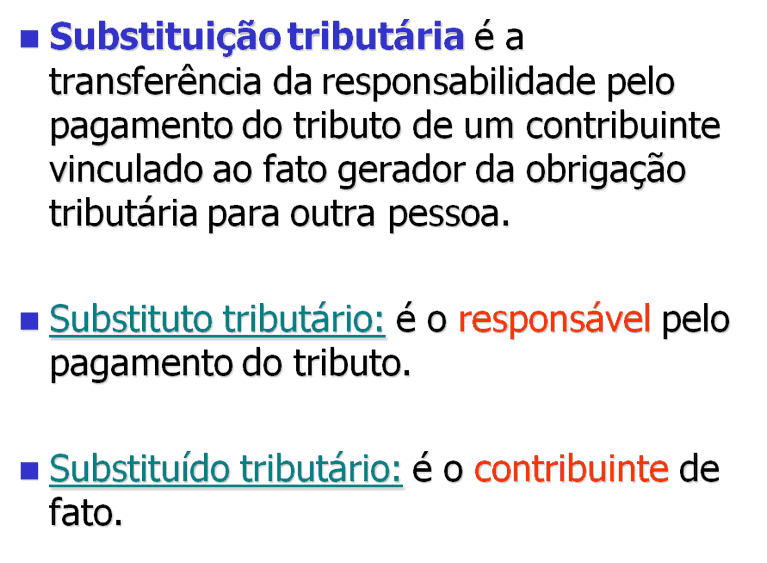
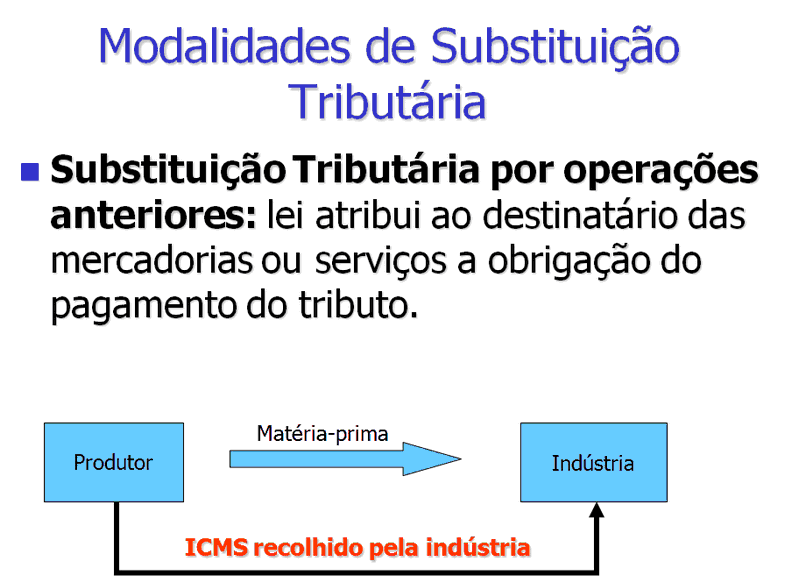
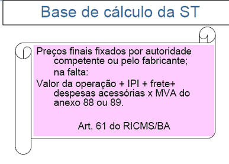

Cadeia do WS |
  
|
Cadeia do WS |
|
Instalação do Certificado Digital da Cadeia do WS
Além do certificado digital do cliente, também é necessário instalar os certificados digitais da cadeia do certificado digital do emissor do certificado digital do Web Sevicie da UF de localização do emissor.
Instalando a cadeia de certificados do certificado digital do Web Service
Os Web Service utilizam certificados digitais das seguintes cadeias de certificação da hierarquia ICP-Brasil (em ordem alfabética):
● AC CertiSign Múltipla G3 (CE, MS, MT e PE);
● AC Imprensa Oficial SP RFB G2 (SP)
● AC PRODEMGE G2 (MG);
● AC SERASA Certificadora Digital v1 (AM e GO);
● AC SERPRO Final v2 (RS, SCAN, SVAN e SVRS)
● AC SERPRORFB (BA e PR);
|
Os arquivos com a cadeia de certificados digitais estão disponíveis na pasta Cadeia Certificados WS e podem ser instalados facilmente selecionando o arquivo no Explorer e clicando com o botão direito a opção instalar certificado.

|
Em algumas versões do Windows pode acontecer do certificado digital da Autorizada Certificadora Raiz Brasileira não ser instalada no repositório de Autoridade de Certificação Raiz Confiáveis.
Para solucionar este problema, a instalação do certificado digital deve ser dirigida para que o certificado digital seja instalado corretamente.
1. selecione o certificado digital da AC_Raiz_V1.cer no Explorer; 2. clique com o botão direito do mouse e selecione a opção instalar certificado; 3. clique em avançar no Assistente de Importação de Certificados; 4. clique na opção Colocar todos os certificados no armazenamento a seguir; 5. clique em procurar; 6. selecione o armazenamento de certificados: Autoridade de Certificação Raiz Confiáveis; 7. clique em OK; 8. clique em avançar; 9. Clique em concluir; |
Verificando se o certificado digital do Web Service da versão 2.0 da SEFAZ é confiável
1. clique no link do ambiente da UF que deseja verificar:
UF |
Ambiente |
Ambiente |
Autoridade Certificação |
Observação |
AM |
AC SERASA Certificadora Digital v1 |
|||
BA |
AC SERPRORFB |
|||
CE |
AC CertiSign Múltipla G3 |
|||
GO |
AC SERASA Certificadora Digital v1 |
|||
MG |
AC PRODEMGE G2 (MG) |
|||
MS |
AC CertiSign Múltipla G3 |
|||
MT |
AC CertiSign Múltipla G3 |
|||
PE |
AC CertiSign Múltipla G3 |
|||
PR |
AC SERPRORFB |
|||
RS |
AC SERPRO Final v2 |
|||
SP |
AC Imprensa Oficial SP RFB G2 |
|||
SCAN |
AC SERPRO Final v2 |
|||
SVAN |
AC SERPRO Final v2 |
Atende: ES, MA, PA, PI e RN |
||
SVRS |
AC SERPRO Final v2 |
Atende: AC, AL, AM, AP, DF, PB, RJ, RO, RR, SC, SE e TO |
2. Após o clique, será aberto uma nova janela do browser e podemos ter uma das seguintes situações:
2.1 - Certificado Digital do WS acessado não confiável

O Certificado Digital do WS não confiável
O Certificado Digital do Web Service acessado não é confiável para Windows. Solução
Instalação dos Certificados Digitais da cadeia da Autoridade Certificado que emitiu o Certificado Digital do Web Service acessado.
|
2.2 - Certificado Digital do Web Service confiável, mas Certificado Digital Cliente Inexistente ou Inválido
Resultados possíveis:

Dependendo do WS o resultado pode ser:

|
2.3 - Certificado Digital do Web Service confiável, com solicitação de escolha do Certificado Digital Cliente

3. Após a escolha do Certificado Digital do Cliente, podemos ter uma das seguintes situações:
3.1 - Certificado Digital Cliente Inválido
Resultados possíveis:

Dependendo do WS o resultado pode ser:

certificado digital do tipo A3 - o certificado digital não está sendo enviado devido à possível falha no autenticação do PIN, em geral este problema ocorre quando o driver do dispositivo é incompatível com a versão do Windows. A substituição dos drivers e dos aplicativos do smartcard ou token pode resolver o problema.
certificado digital inválido para o WS - o certificado digital é considerado inválido pelo Web Service, talvez esteja revogado.
|
3.2 - O Certificado Digital do Web Service Confiável

Parabéns!
O Certificado Digital cliente e o Certificado Digital do Web Service são confiáveis.
|
 IMPORTANTE
IMPORTANTE